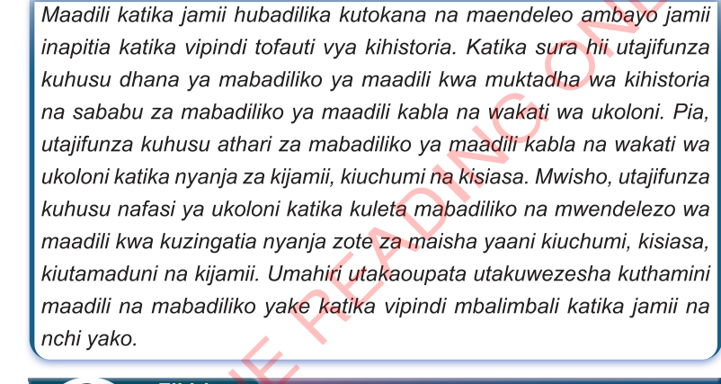

Sura ya Tatu
Mabadiliko na mwendelezo wa maadili ya Kitanzania kabla na wakati wa ukoloni
Utangulizi

Dhana ya mabadiliko ya maadili
Ili kuelewa vizuri dhana ya mabadiliko ya maadili, ni vema kwanza kuelewa maana ya maadili na vyanzo vyake, kwani mabadiliko ya maadili mara nyingi yanatokana na mabadiliko ya vyanzo au chimbuko lake. Kwa kifupi, maadili ni kanuni, sheria, taratibu na fikra zinazoongoza matendo au maisha ya watu katika jamii husika. Kuna aina kuu mbili za maadili ambazo ni maadili ya dini na maadili ya kisekula. Maadili ya dini ni sheria, kanuni, fikra na taratibu za maisha zinazotokana na dini au imani ya mtu au jamii katika dini husika. Maadili haya yana chimbuko lake katika vitabu vitakatifu, ambavyo huaminika kubeba ujumbe na matakwa ya Mungu. Aina hii ya maadili ina tabia ya kutobadilika badilika. Kwa mfano, kanuni ya “kutoiba kitu cha mtu mwingine” au “kusema uongo”,